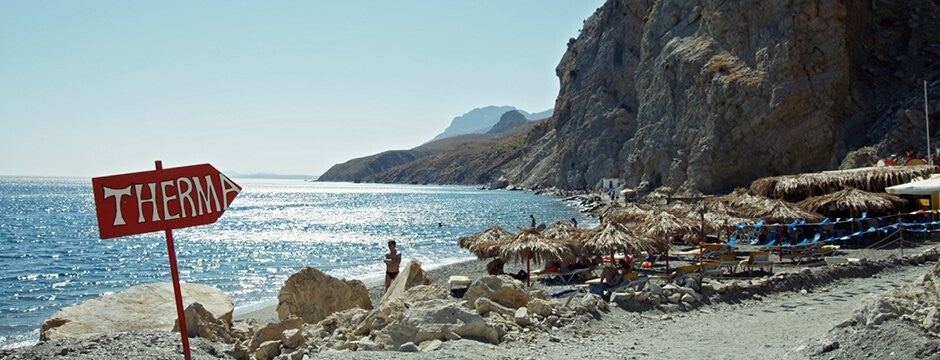

Route
De laatste klim is steil. Met de fiets alleen als je dat aankunt.

De warmwaterbron is gratis en geen georganiseerde excursie. Je kunt er zelf naartoe. De uitleg staat bij de bezienswaardigheid Therma. Een transfer regel je apart.
De laatste klim is steil. Met de fiets alleen als je dat aankunt.